PS笔刷探究
选项研究
由于多次搜索和研究画笔设置和笔刷的制作方法，但均感觉网上所讲一知半解居多，这次特意找时间全部整理了一遍。难理解的、可能并不常用的放在前面着重讲，容易理解的、常用的则放在后面。
杂色(Noise)
为个别画笔笔尖增加额外的随机性。当应用于柔画笔笔尖（包含灰度值的画笔笔尖）时，此选项最有效。
湿边(Wet Edges)
沿画笔描边的边缘增大油彩量，从而创建水彩效果。
喷枪/建立(Airbrush/Build-up)
将渐变色调应用于图像，同时模拟传统的喷枪技术。“画笔”面板中的“喷枪”选项与选项栏中的“喷枪”选项相对应。喷枪的本质特点是：当你的笔/鼠标在一个点按住停留的时候，颜色会不断加深，影响区域也越来越大。如果没有勾选喷枪/建立选项，按多久都是一样的颜色深度。从某种意义上讲，喷枪效果在“笔压”之外加入了一个“停留时间”维度。
平滑(Smoothing)
在画笔描边中生成更平滑的曲线。当使用光笔进行快速绘画时，此选项最有效；但是它在描边渲染中可能会导致轻微的滞后。
保护纹理(Protect Texture)
将相同图案和缩放比例应用于具有纹理的所有画笔预设。选择此选项后，在使用多个纹理画笔笔尖绘画时，可以模拟出一致的画布纹理。
画笔笔势选项
画笔笔势选项可让您获得类似光笔的效果，并可让您控制画笔的角度和位置。
这里说的光笔是指一种在板绘时可以感知笔的倾斜角度、旋转的笔。画笔笔势选项固定且剥夺了板绘笔旋转、倾斜、压力的能力，直接设定为了定值。
倾斜 X
确定画笔从左向右倾斜的角度。
倾斜 Y
确定画笔从前向后倾斜的角度。
旋转
确定硬毛刷的旋转角度。
压力
确定应用于画布上画笔的压力。
启用“覆盖”选项以维护静态画笔笔势。
画笔散布
“画笔散布”可确定描边中笔迹的数目和位置。
简单的说，开启了该选项后，画的时候笔迹并不会严格遵循你笔的下笔位置，而是会在x和y轴上有一个或多或少的偏移。
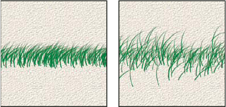
无散布的画笔描边（左图）和有散布的画笔描边（右图）
散布和控制
指定画笔笔迹在描边中的分布方式。当选择“两轴”时，画笔笔迹按径向分布。当取消选择“两轴”时，画笔笔迹垂直于描边路径分布。
要指定散布的最大百分比，请输入一个值。若要指定希望如何控制画笔笔迹的散布变化，请从“控制”弹出式菜单中选取一个选项：
关
指定不控制画笔笔迹的散布变化。
渐隐
按指定数量的步长将画笔笔迹的散布从最大散布渐隐到无散布。
钢笔压力、钢笔斜度、光笔轮、旋转
依据钢笔压力、钢笔斜度、钢笔拇指轮位置或钢笔的旋转来改变画笔笔迹的散布。
计数
指定在每个间距间隔应用的画笔笔迹数量。
颜色动态画笔选项
颜色动态决定描边路线中油彩颜色的变化方式。
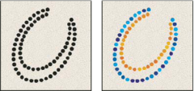
无颜色动态的画笔描边（左图）和有颜色动态的画笔描边（右图）
它也可以用来制作如下的图像：
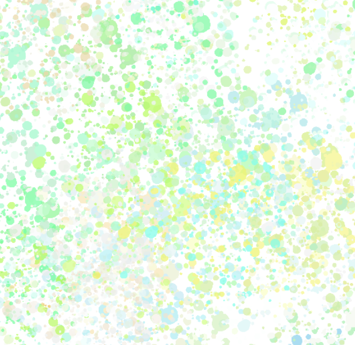每笔尖应用
指定为描边中每个不同的笔尖图章更改颜色。
如果取消选中，则在每个描边开始时即进行动态更改。您便可以更改不同描边的颜色，而不是对每个描边内部更改颜色。
前景/背景抖动和控制
指定前景色和背景色之间的油彩变化方式。
要指定油彩颜色可以改变的百分比，请键入数字或使用滑块来输入值。若要指定希望如何控制画笔笔迹的颜色变化，请从“控制”弹出式菜单中选取一个选项：
关
指定不控制画笔笔迹的颜色变化。
渐隐
按指定数量的步长在前景色和背景色之间改变油彩颜色。
钢笔压力、钢笔斜度、光笔轮、旋转
依据钢笔压力、钢笔斜度、钢笔拇指轮位置或钢笔的旋转来改变前景色和背景色之间的油彩颜色。
色相抖动
指定描边中油彩色相可以改变的百分比。键入数字，或者使用滑块来输入值。较低的值在改变色相的同时保持接近前景色的色相. 较高的值增大色相间的差异。
饱和度抖动
指定描边中油彩饱和度可以改变的百分比。键入数字，或者使用滑块来输入值。较低的值在改变饱和度的同时保持接近前景色的饱和度。较高的值增大饱和度级别之间的差异。
亮度抖动
指定描边中油彩亮度可以改变的百分比。键入数字，或者使用滑块来输入值。较低的值在改变亮度的同时保持接近前景色的亮度。较高的值增大亮度级别之间的差异。
纯度
增大或减小颜色的饱和度。键入一个数字，或者使用滑块输入一个介于 -100 和 100 之间的百分比。如果该值为 -100，则颜色将完全去色；如果该值为 100，则颜色将完全饱和。
双重画笔
双重画笔组合两个笔尖来创建画笔笔迹。将在主画笔的画笔描边内应用第二个画笔纹理；仅绘制两个画笔描边的交叉区域。在“画笔”面板的“画笔笔尖形状”部分中设置主要笔尖的选项。从“画笔”面板的“双重画笔”部分选择另一个画笔笔尖，然后设置以下任意选项。
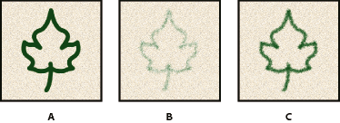
A. 主画笔笔尖描边（尖角 55）。 B. 辅助画笔笔尖描边（草）。 C. 双重画笔描边（使用两者）。
模式
选择从主要笔尖和双重笔尖组合画笔笔迹时要使用的混合模式。（请参阅混合模式。）
直径
控制双笔尖的大小。以像素为单位输入值，或者单击“使用取样大小”来使用画笔笔尖的原始直径。(只有当画笔笔尖形状是通过采集图像中的像素样本创建的时，“使用取样大小”选项才可用。)
间距
控制描边中双笔尖画笔笔迹之间的距离。若要更改间距，请键入数字，或使用滑块输入笔尖直径的百分比。
散布
指定描边中双笔尖画笔笔迹的分布方式。当选中“两轴”时，双笔尖画笔笔迹按径向分布。当取消选择“两轴”时，双笔尖画笔笔迹垂直于描边路径分布。若要指定散布的最大百分比，请键入数字或使用滑块来输入值。
计数
指定在每个间距间隔应用的双笔尖画笔笔迹的数量。键入数字，或者使用滑块来输入值。
纹理画笔选项
纹理画笔利用图案使描边看起来像是在带纹理的画布上绘制的一样。
无纹理的画笔描边（左图）和有纹理的画笔描边（右图）
单击图案样本，然后从弹出式面板中选择图案。设置下面的一个或多个选项：
反相
基于图案中的色调反转纹理中的亮点和暗点。当选择“反相”时，图案中的最亮区域是纹理中的暗点，因此接收最少的油彩；图案中的最暗区域是纹理中的亮点，因此接收最多的油彩。当取消选择“反相”时，图案中的最亮区域接收最多的油彩；图案中的最暗区域接收最少的油彩。
比例
指定图案的缩放比例。键入数字，或者使用滑块来输入图案大小的百分比值。
为每个笔尖设置纹理
将选定的纹理单独应用于画笔描边中的每个画笔笔迹，而不是作为整体应用于画笔描边（画笔描边由拖动画笔时连续应用的许多画笔笔迹构成）。必须选择此选项，才能使用“深度”变化选项。
模式
指定用于组合画笔和图案的混合模式。（请参阅混合模式。）
深度
指定油彩渗入纹理中的深度。键入数字，或者使用滑块来输入值。如果是 100%，则纹理中的暗点不接收任何油彩。如果是 0%，则纹理中的所有点都接收相同数量的油彩，从而隐藏图案。
最小深度
指定将“深度控制”设置为“渐隐”、“钢笔压力”、“钢笔斜度”或“光笔轮”并且选中“为每个笔尖设置纹理”时油彩可渗入的最小深度。
深度抖动和控制
指定当选中“为每个笔尖设置纹理”时深度的改变方式。若要指定抖动的最大百分比，请输入一个值。若要指定希望如何控制画笔笔迹的深度变化，请从“控制”弹出式菜单中选取一个选项：
关
指定不控制画笔笔迹的深度变化。
渐隐
按指定数量的步长从“深度抖动”百分比渐隐到“最小深度”百分比。
钢笔压力、钢笔斜度、光笔轮、旋转
依据钢笔压力、钢笔斜度、钢笔拇指轮位置或钢笔旋转角度来改变深度。
几个示例：
减去模式：
正片叠底模式：
颜色减淡模式：
高度模式：
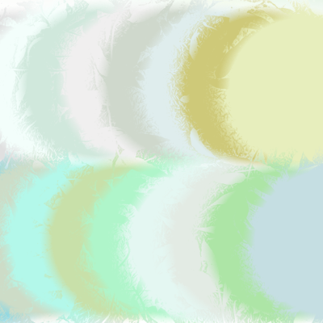画笔形状动态
形状动态决定描边中画笔笔迹的变化。
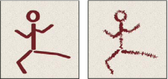
无形状动态（左图）和有形状动态（右图）的画笔描边
大小抖动和控制
指定描边中画笔笔迹大小的改变方式。有关更多信息，请参阅创建和修改画笔。
若要指定抖动的最大百分比，请通过键入数字或使用滑块来输入值。若要指定希望如何控制画笔笔迹的大小变化，请从“控制”弹出式菜单中选取一个选项：
关
指定不控制画笔笔迹的大小变化。
渐隐
按指定数量的步长在初始直径和最小直径之间渐隐画笔笔迹的大小。每个步长等于画笔笔尖的一个笔迹。值的范围可以从 1 到 9999。例如，输入步长数 10 会产生 10 个增量的渐隐。
钢笔压力、钢笔斜度或光笔轮
可依据钢笔压力、钢笔斜度或钢笔拇指轮位置以在初始直径和最小直径之间改变画笔笔迹大小。
最小直径
指定当启用“大小抖动”或“大小控制”时画笔笔迹可以缩放的最小百分比。可通过键入数字或使用滑块来输入画笔笔尖直径的百分比值。
倾斜缩放比例
指定当“大小抖动”设置为“钢笔斜度”时，在旋转前应用于画笔高度的比例因子。键入数字，或者使用滑块输入画笔直径的百分比值。
角度抖动和控制
指定描边中画笔笔迹角度的改变方式。该选项启用时，每次你重新下笔，都会随机改变一个画笔角度，随机程度由你设置的值来决定。若要指定抖动的最大百分比，请输入一个 360 度的百分比值。若要指定希望如何控制画笔笔迹的角度变化，请从“控制”弹出式菜单中选取一个选项：
关
指定不控制画笔笔迹的角度变化。
渐隐
按指定数量的步长在 0 和 360 度之间渐隐画笔笔迹角度。
钢笔压力、钢笔斜度、光笔轮、旋转
依据钢笔压力、钢笔斜度、钢笔拇指轮位置或钢笔的旋转在 0 到 360 度之间改变画笔笔迹的角度。
初始方向
使画笔笔迹的角度基于画笔描边的初始方向。
方向
使画笔笔迹的角度基于画笔描边的方向。
圆度抖动和控制
指定画笔笔迹的圆度在描边中的改变方式。若要指定抖动的最大百分比，请输入一个指明画笔长短轴之间的比率的百分比。若要指定希望如何控制画笔笔迹的圆度变化，请从“控制”弹出式菜单中选取一个选项：
关
指定不控制画笔笔迹的圆度变化。
渐隐
按指定数量步长在 100% 和“最小圆度”值之间渐隐画笔笔迹的圆度。
钢笔压力、钢笔斜度、光笔轮、旋转
依据钢笔压力、钢笔斜度、钢笔拇指轮位置或钢笔的旋转在 100% 和“最小圆度”值之间改变画笔笔迹的圆度。
最小圆度
指定当“圆度抖动”或“圆度控制”启用时画笔笔迹的最小圆度。输入一个指明画笔长短轴之间的比率的百分比。
画笔投影
指定当您使用光笔绘画时，光笔将更改为倾斜状态并将旋转光笔以改变笔尖形状。
传递/转换画笔选项
转换画笔选项确定油彩在描边路线中的改变方式。
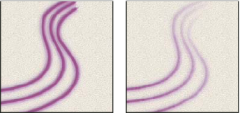
无动态绘画的画笔描边（左图）和有动态绘画的画笔描边（右图）
不透明度抖动和控制
指定画笔描边中油彩不透明度如何变化，最高值（但不超过）是选项栏中指定的不透明度值。要指定油彩不透明度可以改变的百分比，请键入数字或使用滑块来输入值。若要指定希望如何控制画笔笔迹的不透明度变化，请从“控制”弹出式菜单中选取一个选项：
关
指定不控制画笔笔迹的不透明度变化。
渐隐
按指定数量的步长将油彩不透明度从选项栏中的不透明度值渐隐到 0。
钢笔压力、钢笔斜度或光笔轮
可依据钢笔压力、钢笔斜度或钢笔拇指轮的位置来改变颜料的不透明度。
流量抖动和控制
指定画笔描边中油彩流量如何变化，最高（但不超过）值是选项栏中指定的流量值。
要指定油彩流量可以改变的百分比，请键入数字或使用滑块来输入值。若要指定希望如何控制画笔笔迹的流量变化，请从“控制”弹出式菜单中选取一个选项：
关
指定不控制画笔笔迹的流量变化。
渐隐
按指定数量的步长将油彩流量从选项栏中的流量值渐隐到 0。
钢笔压力、钢笔斜度或光笔轮
可依据钢笔压力、钢笔斜度或钢笔拇指轮的位置来改变油彩的流量。
标准画笔笔尖形状选项
对于标准画笔笔尖，可设置“画笔设置”面板中的以下选项：
大小
控制画笔大小。输入以像素为单位的值，或拖动滑块。
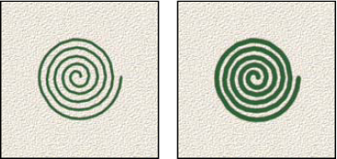
使用取样大小
将画笔复位到它的原始直径。只有在画笔笔尖形状是通过采集图像中的像素样本创建的情况下，此选项才可用。
翻转 X
改变画笔笔尖在其 x 轴上的方向。
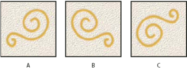
将画笔笔尖在其 x 轴上翻转
A. 处在默认位置的画笔笔尖 B. 选中了“翻转 X”时 C. 选中了“翻转 X”和“翻转 Y”时
翻转 Y
改变画笔笔尖在其 y 轴上的方向。
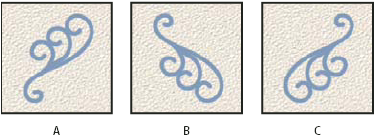
将画笔笔尖在其 y 轴上翻转
A. 处在默认位置的画笔笔尖 B. 选中了“翻转 Y”时 C. 选中了“翻转 Y”和“翻转 X”时
角度
指定椭圆画笔或样本画笔的长轴从水平方向旋转的角度。键入度数，或在预览框中拖动水平轴。
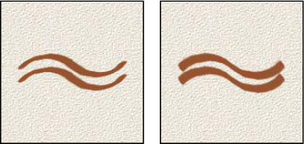
带角度的画笔创建雕刻状描边
圆度
指定画笔短轴和长轴之间的比率。输入百分比值，或在预览框中拖动点。100% 表示圆形画笔，0% 表示线性画笔，介于两者之间的值表示椭圆画笔。
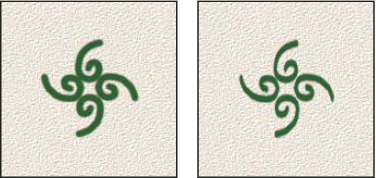
调整圆度以压缩画笔笔尖形状
硬度
控制画笔硬度中心的大小。键入数字，或者使用滑块输入画笔直径的百分比值。不能更改样本画笔的硬度。
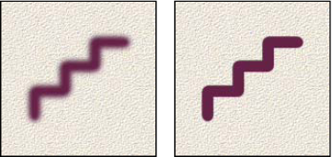
具有不同硬度值的画笔描边
间距
控制描边中两个画笔笔迹之间的距离。如果要更改间距，请键入数字，或使用滑块输入画笔直径的百分比值。当取消选择此选项时，光标的速度将确定间距。
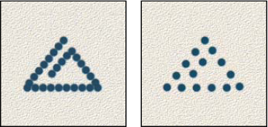
增大间距可使画笔急速改变
注意:
当使用预设画笔时，按 [ 键可减小画笔宽度；按 ] 键可增加宽度。对于硬边圆、柔边圆和书法画笔，按 Shift+ [ 键可减小画笔硬度；按 Shift+ ] 键可增加画笔硬度。
常用辨析
- 常用的19号笔刷其实主要就是
大小抖动+流量抖动+建立构成的。 - 常用的喷枪就是
柔角笔尖形状+流量抖动+建立构成的。或者说，广义上的喷枪可以由任意一个笔刷加上建立选项构成。 - 能否混色不是由笔刷决定的，而是由笔的类型决定的。混合画笔工具可以让颜色混合，而普通 画笔工具则不可以。混合画笔工具的混色不仅仅是上下颜色的融合，而且会把下面的色调带到现有的笔刷之中，即使后面没有了下层其他颜色，画笔也会持续维持混色一段时间直至完全衰减。如下图：
- 要想实现颜色混合，比如
红+绿=黄，任何有透明度的笔刷都可以实现。但如果想让这些颜色像是都粘在了刷子上一样后面会一起蹭出来，或是变化涂料的湿度，或是想要“新的涂料上去后下面的涂料被浸湿并聚集在新笔迹两侧”的效果，则需要使用 混合画笔工具。 - 水彩的核心是
低流量+建立+散布+双重画笔+流量抖动+大小抖动。其中，在纸上氤氲散开的效果主要是由双重画笔中的辅助画笔完成的